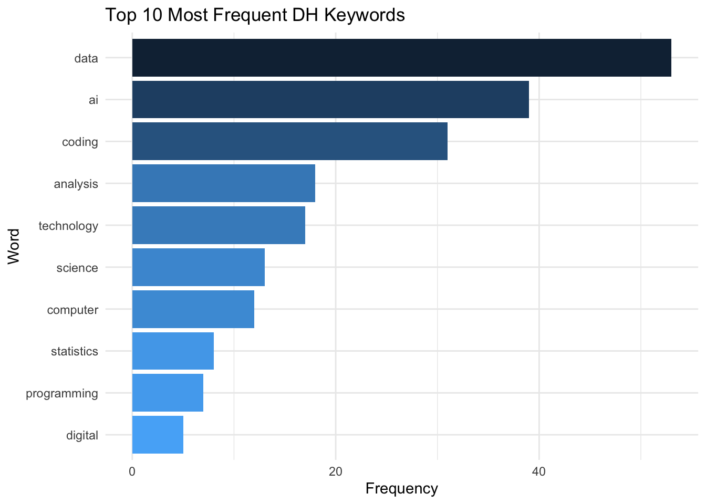

if (!require("pacman")) install.packages("pacman")Loading required package: pacmanWelcome to the world of quantitative text analysis! In this chapter, we’ll explore the fundamental concepts and techniques used to prepare text data for analysis. We’ll use a collection of classic novels as our dataset to demonstrate these concepts.
Quantitative text analysis (QTA) is a method of analyzing large volumes of text data using computational techniques. It allows researchers to extract meaningful patterns, themes, and insights from textual data that would be difficult or impossible to analyze manually.
In Digital Humanities, QTA offers powerful tools for exploring large text corpora:
Scale: Analyze vast collections of texts, revealing patterns across time periods, genres, or authors.
Distant Reading: Observe broader patterns in literature and cultural production.
Hypothesis Testing: Empirically test literary and cultural theories across large datasets.
Discovery: Reveal unexpected patterns or connections, sparking new research questions.
Interdisciplinary: Combine methods from linguistics, computer science, and statistics with humanistic inquiry.
Visualization: Present textual data in new, visually interpretable ways.
QTA complements traditional close reading, offering Digital Humanities scholars new perspectives on cultural, historical, and literary phenomena.

The Quantitative Text Analysis (QTA) workflow illustrates the systematic process of analyzing textual data using computational methods. This workflow can be divided into two main stages: Preprocessing Steps and Quantitative Text Analysis.
Preprocessing Steps: This initial stage is crucial for preparing raw text data for analysis. It involves several operations:
These steps are not always applied in a fixed order and may be selectively used depending on the specific requirements of the analysis. The output of this stage is processed text ready for analysis.
Quantitative Text Analysis:
This stage involves applying various analytical techniques to the preprocessed text. Some common methods include:
This workflow emphasizes the importance of proper text preprocessing before conducting any advanced analysis. It provides a framework for researchers to follow, ensuring that their textual data is appropriately prepared and analyzed using quantitative methods. The diagram’s structure, with its clear progression from preprocessing to analysis, highlights the sequential nature of the QTA process while also indicating the flexibility within each stage.
pacman
We will be using some new packages that you probably haven’t installed. To streamline the process of package installation, let’s introduce a helpful tool for managing R packages: pacman. The pacman package is a convenient package management tool for R that simplifies the process of loading and installing multiple packages.
Key features of pacman:
install.packages() and library() into a single function p_load().Let’s install pacman:
if (!require("pacman")) install.packages("pacman")Loading required package: pacmanOnce we load the pacman library, we can use p_load() to efficiently load (and install if necessary) the packages we’ll need:
library(pacman)
p_load(tidyverse, tidytext)This single line will ensure all the packages we need are installed and loaded, streamlining our setup process.
Text preprocessing is the crucial first step in quantitative text analysis. It involves cleaning and standardizing raw text data to make it suitable for computational analysis.
Why is it important?
Fundamental considerations:
Remember, there’s no one-size-fits-all approach to preprocessing. The techniques you apply should be carefully considered based on your specific research context.
To showcase the various techniques for text preprocessing, let’s first create a mock dataset:
mock_data <- tibble(
text = c(
"The Quick Brown Fox Jumps Over the Lazy Dog! Data Science meets Cultural Studies.",
"Digital Humanities 101: An Introduction (2024); Exploring Big Data in Literature & History",
"R Programming for Text Analysis - Chapter 3. Machine Learning for Textual Analysis",
"NLP techniques & their applications in DH research; Computational Methods in Humanities Research?",
"20+ ways to visualize data: graphs, charts, and more! Digital Archives and Text Mining Techniques."
)
)Let’s take a closer look at our mock dataset:
print(mock_data)# A tibble: 5 × 1
text
<chr>
1 The Quick Brown Fox Jumps Over the Lazy Dog! Data Science meets Cultural Stud…
2 Digital Humanities 101: An Introduction (2024); Exploring Big Data in Literat…
3 R Programming for Text Analysis - Chapter 3. Machine Learning for Textual Ana…
4 NLP techniques & their applications in DH research; Computational Methods in …
5 20+ ways to visualize data: graphs, charts, and more! Digital Archives and Te…Examine the mock dataset above and reflect on the following questions:
What characteristics or elements do you notice that might need preprocessing for effective text analysis?
What challenges might these elements pose for text analysis? How might preprocessing help address these challenges?
Capitalization: Words are inconsistently capitalized (e.g., “The Quick Brown Fox” vs. “Data Science”). This could lead to treating identical words as different entities.
Punctuation: Various punctuation marks are present, including periods, exclamation marks, colons, and semicolons. These might interfere with word tokenization and analysis.
Numbers: Some entries contain numbers (e.g., “101”, “2024”, “3”, “20+”). Depending on the analysis goals, these might need to be removed or treated specially.
Special Characters: There are ampersands (&) and hyphens (-) which might need special handling.
Sentence Structure: Each row contains multiple sentences. For sentence-level analysis, we might need to split these.
Abbreviations: “NLP” and “DH” are present. We might need to decide whether to expand these or treat them as single tokens.
Stop Words: Common words like “the”, “and”, “for” are present. These might not contribute much meaning to the analysis.
These observations highlight the need for various preprocessing steps, including: - Converting text to lowercase for consistency - Removing or standardizing punctuation - Handling numbers and special characters - Sentence tokenization - Word tokenization - Removing stop words
By addressing these elements through preprocessing, we can prepare our text data for more effective and accurate analysis.Before we dive into analyzing our mock data, let’s explore a powerful tool in text analysis: Regular Expressions.
Have you ever wondered how computer programs like Excel or Word can find the exact word or phrase you’re searching for? Or how they can replace all instances of a word throughout a document in just seconds? These everyday text operations are powered by a concept called pattern matching, and regular expressions take this idea to a whole new level.
In this section, we’ll introduce the basics of regular expressions, focusing on concepts and examples relevant to humanities research. We’ll start with simple patterns similar to what you might use in Excel, and gradually move to more powerful expressions. By the end, you’ll have a foundation that will help you better understand and implement the text preprocessing techniques we’ll use in our analysis.
Regular Expressions, often called regex, are like a special language for describing patterns in text. Imagine you’re a librarian with a magical magnifying glass that can find not just specific words, but patterns in books.
To give you a better idea of what regular expressions look like and how they work, let’s look at an example:
p_load(stringr)
# Sample text
text <- "Jane Austen wrote Pride and Prejudice. Elizabeth Bennet is the protagonist."
# Regex pattern for capitalized words
pattern <- "\\b[A-Z][a-z]+\\b"
# Find all matches
matches <- str_extract_all(text, pattern)
# Print the matches
print(matches)[[1]]
[1] "Jane" "Austen" "Pride" "Prejudice" "Elizabeth" "Bennet" # To see which words were matched in context
str_view(text, pattern)[1] │ <Jane> <Austen> wrote <Pride> and <Prejudice>. <Elizabeth> <Bennet> is the protagonist.Let’s break down the regex pattern \\b[A-Z][a-z]+\\b:
\\b: This represents a word boundary. In R, we need to escape the backslash, so we use two. It ensures we’re matching whole words, not parts of words.
[A-Z]: This character class matches any single uppercase letter from A to Z.
[a-z]+: This matches one or more lowercase letters.
[a-z] is a character class that matches any single lowercase letter.+ quantifier means “one or more” of the preceding element.\\b: Another word boundary to end the match.
So, this pattern matches: - Words that start with a capital letter (like names or the first word of a sentence) - Followed by one or more lowercase letters - As whole words, not parts of larger words
It won’t match: - ALL CAPS words - words with numbers or symbols - Single-letter capitalized words like “I” or “A”
This pattern is useful for finding proper nouns in the middle of sentences, like names of people or places.
You may find that regex can be quite hard to read for humans. POSIX character classes are pre-defined sets of characters that make regex more accessible and portable across different systems. They simplify regex patterns and address some common challenges in text processing:
Simplification: POSIX classes provide easy-to-remember shorthand for common character groups. Instead of writing [A-Za-z] to match any letter, you can use [:alpha:].
Consistency: They ensure consistent behavior across different operating systems and programming languages. For example, [A-Z] might behave differently in some contexts depending on the locale settings, but [:upper:] is always consistent.
Internationalization: POSIX classes can handle characters beyond the ASCII range, making them useful for working with texts in various languages.
Readability: They make regex patterns more readable and self-explanatory, which is especially helpful when sharing code or working in teams.
Here are some useful POSIX character classes:
[:alpha:]: Matches any alphabetic character (equivalent to [A-Za-z] in English texts)[:digit:]: Matches any digit (equivalent to [0-9])[:lower:]: Matches any lowercase letter[:upper:]: Matches any uppercase letter[:punct:]: Matches any punctuation character[:space:]: Matches any whitespace character (spaces, tabs, newlines)By using these classes, you can create more robust and readable regex patterns. For example, instead of [A-Za-z0-9] to match any alphanumeric character, you could use [[:alpha:][:digit:]], which is clearer in its intent and works across different language settings. ````
[[:upper:]][[:lower:]]+[[:digit:]]{4}[[:punct:]]Remember, regex is a tool that becomes more useful as you practice. Start simple, and you’ll gradually be able to create more complex patterns for your research needs!
Now let’s proceed to preprocess the mock dataset!
The first step in our preprocessing pipeline is to ensure our data is in a tidy format, with one sentence per row. We’ll use separate_rows() with a regular expression (regex) pattern to achieve this:
tidy_data <- mock_data %>%
separate_rows(text, sep = "(?<=[.!?])\\s+(?=[A-Z])")
print(tidy_data)# A tibble: 8 × 1
text
<chr>
1 The Quick Brown Fox Jumps Over the Lazy Dog!
2 Data Science meets Cultural Studies.
3 Digital Humanities 101: An Introduction (2024); Exploring Big Data in Literat…
4 R Programming for Text Analysis - Chapter 3.
5 Machine Learning for Textual Analysis
6 NLP techniques & their applications in DH research; Computational Methods in …
7 20+ ways to visualize data: graphs, charts, and more!
8 Digital Archives and Text Mining Techniques. separate_rows()
separate_rows() Function:
separate_rows(data, column, sep = delimiter)(?<=[.!?]): Positive lookbehind, matches a position after a period, exclamation mark, or question mark\\s+: Matches one or more whitespace characters(?=[A-Z]): Positive lookahead, matches a position before an uppercase letterseparate_rows() applies the regex pattern to split the ‘text’ columnNow, let’s apply our text preprocessing skills to a real dataset. We’ll use the answers submitted by you in response to the “what is digital humanities? write down three keywords that come to mind” question. Our goal is to clean and prepare this text data for analysis.
First, let’s download the dataset:
Save it in the folder name data in your working directory.
We can then load the csv file into RStudio:
p_load(tidyverse)
# Load the dataset
dh_keywords <- read_csv("data/dh_keywords.csv", col_names = FALSE)Rows: 180 Columns: 1
── Column specification ────────────────────────────────────────────────────────
Delimiter: ","
chr (1): X1
ℹ Use `spec()` to retrieve the full column specification for this data.
ℹ Specify the column types or set `show_col_types = FALSE` to quiet this message.colnames(dh_keywords) <- "keyword"
# Display the first few rows
head(dh_keywords)# A tibble: 6 × 1
keyword
<chr>
1 math
2 chatgpt
3 AI
4 ai
5 AI
6 ai Convert all keywords to lowercase.
Remove all punctuation from the keywords.
Remove any leading, trailing, or extra whitespace from the keywords.
Remove any rows that are empty after our preprocessing steps.
Congratulations! You’ve successfully preprocessed the DH keywords dataset. These clean keywords are now ready for further analysis, such as frequency counting, visualization, or more advanced text analysis techniques.
In this section, we’ll explore fundamental concepts in text analysis that form the building blocks for more advanced techniques. These concepts are crucial for understanding how we can extract meaningful insights from textual data.
Tokenization is a foundational step in text analysis, involving the process of breaking down text into smaller, meaningful units called tokens. These tokens can be words, phrases, or even sentences, depending on the level of analysis you’re performing.
Word tokenization is the most common form of tokenization, where text is split into individual words. This process allows us to analyze text at its most granular level. Let’s use our preprocessed DH keywords dataset to demonstrate:
p_load(tidytext, tidyverse)
word_tokens <- dh_keywords_final %>%
unnest_tokens(word, keyword)
# Display the first few tokens
word_tokens %>%
slice_head(n = 10)# A tibble: 10 × 1
word
<chr>
1 math
2 chatgpt
3 ai
4 ai
5 ai
6 ai
7 coding
8 ai
9 ai
10 data :: {.callout-tip} ## The unnest_tokens() function The unnest_tokens() function from the tidytext package is particularly useful because it integrates seamlessly with the tidyverse ecosystem. It splits the text into tokens and transforms the data into a one-token-per-row format, which is ideal for further analysis using dplyr, ggplot2, and other tidy tools. :::
In this example, our keywords are already individual words, so the tokenization might not show a significant difference. However, for longer texts like novels or articles, this process would break down sentences into individual words, allowing for more detailed analysis.
Stemming and lemmatization are techniques used to reduce words to their base or root form. This process is crucial for grouping similar words together and reducing the vocabulary size, which can improve the efficiency and effectiveness of text analysis.
Stemming is a simple, rule-based approach to reduce words to their stem or root form. It typically involves removing the ends of words, which can sometimes result in stems that are not actual words.
p_load(SnowballC)
stemmed_words <- word_tokens %>%
mutate(stem = wordStem(word))
# Display a few examples
stemmed_words %>%
select(word, stem) %>%
distinct() %>%
slice_head(n = 10)# A tibble: 10 × 2
word stem
<chr> <chr>
1 math math
2 chatgpt chatgpt
3 ai ai
4 coding code
5 data data
6 plus plu
7 humanbeing humanb
8 social social
9 media media
10 informational inform wordStem() function
The wordStem() function from the SnowballC package implements the Porter stemming algorithm, which is widely used in text processing. While stemming is fast and easy to implement, it can sometimes produce stems that are not real words, which might be confusing in some contexts.
Lemmatization is a more sophisticated approach that considers the context and part of speech of a word to determine its base form or lemma. Unlike stemming, lemmatization always produces real words.
p_load(textstem)
lemmatized_words <- word_tokens %>%
mutate(lemma = lemmatize_words(word))
# Display a few examples
lemmatized_words %>%
select(word, lemma) %>%
distinct() %>%
slice_head(n = 10)# A tibble: 10 × 2
word lemma
<chr> <chr>
1 math math
2 chatgpt chatgpt
3 ai ai
4 coding code
5 data datum
6 plus plus
7 humanbeing humanbeing
8 social social
9 media medium
10 informational informationallemmatize_words() function
The lemmatize_words() function from the textstem package uses a dictionary-based approach to find the lemma of each word. Lemmatization is generally more accurate than stemming but can be slower and more computationally intensive.
Choosing between stemming and lemmatization depends on your specific needs, resources, and the nature of your text analysis project:
Speed vs. Accuracy:
Language Complexity:
Domain Specificity:
Available Resources:
Project Goals:
Text Quality:
Interpretability:
In practice, many researchers try both methods and compare results. For humanities projects, especially those involving literary analysis or historical texts, lemmatization often provides more meaningful and interpretable results, despite the additional computational cost.
N-grams are contiguous sequences of n items from a given text. These items can be words, characters, or even syllables. N-grams help capture phrases and word associations, providing context that single words might miss.
N-grams preserve word order, which can be crucial for understanding meaning and context in text analysis.
Let’s create bigrams from our original (non-preprocessed) DH keywords dataset:
bigrams <- dh_keywords %>%
unnest_tokens(bigram, keyword, token = "ngrams", n = 2)
# Display the most common bigrams
bigrams %>%
count(bigram, sort = TRUE) %>%
slice_head(n = 10)# A tibble: 10 × 2
bigram n
<chr> <int>
1 <NA> 67
2 ai coding 6
3 coding data 6
4 data ai 6
5 data coding 6
6 computer science 5
7 data analysis 5
8 ai data 4
9 social science 4
10 analysis coding 3Bigrams can reveal common phrases and word pairs in the text that single words miss. For instance, “digital humanities” carries more specific meaning than “digital” and “humanities” separately. In literary analysis, bigrams like “stream consciousness” might indicate modernist writing techniques.
N-grams are particularly useful for:
Researchers often use a combination of n-gram sizes (e.g., unigrams, bigrams, and trigrams) for several reasons:
However, using multiple n-gram sizes also has challenges: - Increased Complexity: More data to process and analyze. - Overlapping Information: Bigrams and trigrams may contain redundant information. - Sparse Data: Larger n-grams may occur very infrequently, leading to sparse data issues.
The choice depends on your research questions and the nature of your texts.
Here’s an example of how we might generate n-grams of different sizes:
library(tidytext)
library(dplyr)
# Function to generate n-grams
generate_ngrams <- function(data, n) {
data %>%
unnest_tokens(ngram, keyword, token = "ngrams", n = n) %>%
count(ngram, sort = TRUE) %>%
mutate(n = n)
}
# Generate unigrams, bigrams, and trigrams
unigrams <- generate_ngrams(dh_keywords, 1)
bigrams <- generate_ngrams(dh_keywords, 2)
trigrams <- generate_ngrams(dh_keywords, 3)
# Combine the results
all_ngrams <- bind_rows(unigrams, bigrams, trigrams)
# Display the top 5 of each
all_ngrams %>%
group_by(n) %>%
slice_head(n = 5) %>%
arrange(n, desc(nn))This approach allows us to see the most common phrases of different lengths in our dataset, providing a more comprehensive view of the language used in digital humanities keywords.
When working with n-grams, it’s often better to use non-preprocessed text:
Preprocessing can be applied after n-gram generation if needed, but this allows for more nuanced analysis of phrases and expressions.
By considering different n-gram sizes and using non-preprocessed text, we can gain richer insights into the language patterns and meaningful phrases in our digital humanities corpus.
Stopwords are common words (like “the”, “is”, “at”) that are often removed from text analysis because they typically don’t carry much meaning on their own. Removing stopwords can help focus the analysis on more meaningful content words.
p_load(tidytext)
data(stop_words)
words_without_stopwords <- word_tokens %>%
anti_join(stop_words)Joining with `by = join_by(word)`# Compare word counts before and after stopword removal
paste("Words before stopword removal:", nrow(word_tokens))[1] "Words before stopword removal: 393"paste("Words after stopword removal:", nrow(words_without_stopwords))[1] "Words after stopword removal: 374"anti_join() function
The anti_join() function is used here to remove stopwords from our dataset. It keeps only the rows from the first dataset (word_tokens) that do not have a match in the second dataset (stop_words). This effectively removes all the stopwords from our text data.
Word frequency analysis involves counting how often each word appears in a text. This can give us insights into the most important or prevalent themes in the text.
word_frequencies <- words_without_stopwords %>%
count(word, sort = TRUE)
# Display the top 10 most frequent words
word_frequencies %>%
slice_head(n = 10)# A tibble: 10 × 2
word n
<chr> <int>
1 data 53
2 ai 39
3 coding 31
4 analysis 18
5 technology 17
6 science 13
7 computer 12
8 statistics 8
9 programming 7
10 digital 5Word clouds are a popular way to visualize the most frequent words in a text, with the size of each word proportional to its frequency.
p_load(wordcloud2)
# Create a word cloud
wordcloud2(data = word_frequencies %>% slice_head(n = 50), size = 0.5)# Make it more aesthetically pleasing
p_load(RColorBrewer)
# Create a color palette
color_palette <- brewer.pal(8, "Dark2")
wordcloud2(
data = word_frequencies %>% slice_head(n = 50), # Use top 50 most frequent words
size = 0.6, # Increase text size for better readability
color = rep_len(color_palette, 50), # Apply color palette to words
backgroundColor = "white", # Set background color to white
rotateRatio = 0.3, # Reduce word rotation for cleaner look
shape = "circle", # Set overall shape of the word cloud
fontFamily = "Arial", # Use Arial font for consistency
fontWeight = "bold", # Make text bold for emphasis
minRotation = -pi/6, # Set minimum rotation angle (30 degrees left)
maxRotation = pi/6 # Set maximum rotation angle (30 degrees right)
)Bar charts offer a more precise way to visualize word frequencies, especially for comparing the most common words.
p_load(ggplot2)
word_frequencies %>%
slice_head(n = 10) %>%
ggplot(aes(x = reorder(word, n), y = n, fill = desc(n))) +
geom_col() +
coord_flip() +
theme_minimal()+
theme(legend.position = "none") +
labs(x = "Word", y = "Frequency", title = "Top 10 Most Frequent DH Keywords")
This learning check will help reinforce the key concepts covered in this section on basic text analysis and visualization techniques.
¬ß6 Quantitative Text Analysis Basics üìä ‚Äì Intro to DH ¬ß6 Quantitative Text Analysis Basics üìä ‚Äì Intro to DH ¬ß6 Quantitative Text Analysis Basics üìä ‚Äì Intro to DH Intro to DH